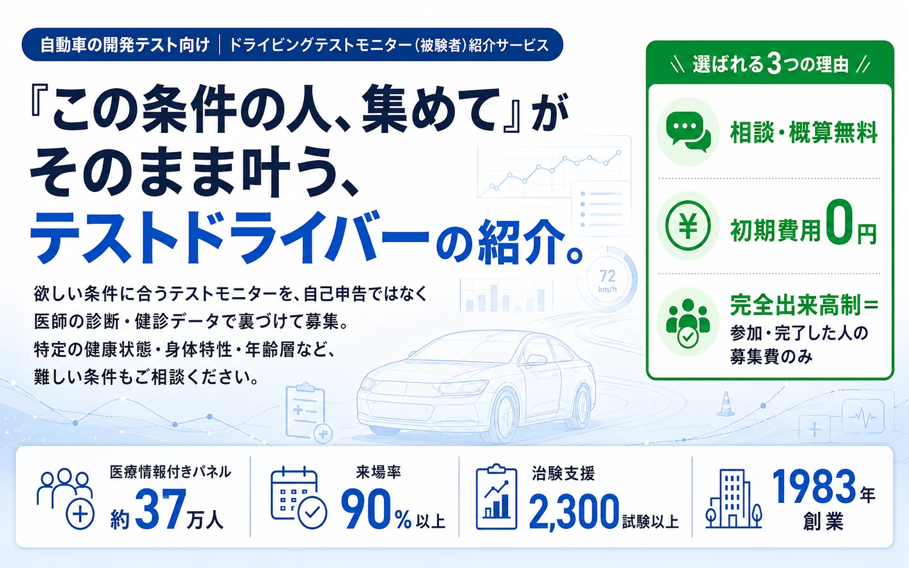

※「約37万人」は医療情報付きの実動パネル数です。条件別の該当数は最新の登録ベースで算出してご提示します。
※「来場率90%以上」は当社が管理する来場型試験での実績値です（対象期間・算定条件はご相談時に提示／試験の種類・地域・拘束時間により変動し、保証値ではありません）。
※ 売り込みはいたしません。「この条件は集まるか？」だけのご相談・資料請求のみでも歓迎です。
上から順に読む必要はありません。関心のあるテーマをクリックすると、詳細が下に開きます。
DMS（眠気・脇見検知）やシート・HMI開発の評価試験で、被験者の"質"と"統制"が試験全体のボトルネックになります。
OEMが求める厳格なターゲット条件（医学的に確認された疲労状態・特定の体格・高齢層など）を一般モニターから集められず、検証の精度が不足。データの妥当性が問われ、評価のやり直しが発生します。
被験者の遅刻・直前辞退・行動制限（睡眠・飲酒等のプロトコル）の不遵守により、大型ドライビングシミュレータ・アイトラッキング・脳波/心拍計測などの高額設備のスケジュールが崩れ、確保した稼働枠・計測スタッフの待機時間・被験者の拘束枠が無駄になります。
費用が発生するのは、事前の条件を満たし、当日のテスト手順（タスク）を最後まで完了した人数分だけ。初期費用は0円です。 医療治験で培った厳格なスケジュール管理により、被験者の欠席や途中辞退による募集費のリスクは当社が担保します。（※会場費・交通宿泊費・直前の条件変更費などは、見積条件にて個別に定義いたします）
「自称・該当者」を排除し、テストデータの信頼性を強固に。医師の診断と健診データに基づき、条件に100%合致する被験者だけをアサインします。
一般的なモニターサイトに多い「自己申告（自称）」によるノイズをなくすため、インクロムでは本人同意のうえ登録された医療情報や健診データを活用。事前の厳格なスクリーニングを経て、真に条件を満たす被験者だけを実験にお呼びします。これにより、AI学習やアルゴリズム検証の信頼性を根底から高める、高精度な実験データ（グラウンドトゥルース）の回収が可能になります。
本人同意のうえ医療情報を登録いただいた方で構成。研究目的・利用範囲は登録時に説明済みのため、用途に応じた参加案内が可能です。
提携医療機関の健診データ・医師の確定診断を裏付けに該当者を抽出。「自己申告だけ」のモニターと比べ、条件適合の確度が段違いです。
「主観や演技のデータ」ではなく「医学的に確認された状態」。AIの誤学習を防ぎ、データの信頼性不足による実験やり直しリスクを根本から防ぎます。
シート・快適性評価、姿勢計測 など
眠気・覚醒度検知、疲労検証 など
安全設計、拘束・着座評価 など
シニア反応・視認性・操作性評価 など
標準比較データ・対照群 など
該当する被験者数は、ご要件の確定後に最新の登録ベースで即時算出してご提示します。
国の規制（GCP等）に基づく治験支援で培った行動管理ノウハウを、そのまま評価試験に適用。「集めて終わり」ではなく、当日きちんと来て・条件通りに参加してもらうまでを管理します。
確定診断・条件適合と、運転免許・運転頻度などの実験要件を事前確認。
アイトラ（眼鏡・コンタクト）の認識エラーや脳波の装着不可を事前に確認し、テスト当日の測定トラブルを防ぎます。
睡眠・飲酒など行動制限プロトコルの遵守を専門スタッフが直接リマインド・確認。
不遵守者の除外基準を運用し、欠席時は補欠アサインでスケジュールを死守。
この一連の統制の結果として、来場型試験で来場率90%以上を実現しています。
※ 当社が管理する来場型試験における実績値です（対象期間・算定条件はお問い合わせ時にご提示）。来場率は試験の種類・地域・拘束時間により変動し、保証値ではありません。「来場率」と「完了率」は分けて定義します。
代表的な『テストシーン（活用例）』ごとに、「医療指標の抽出」から「自動車テストへの適合」、そして「当日の厳格な現場管理」までをシームレスに連携させた対応例です。
| テストシーン（活用例） | 医療・属性スクリーニング | 運転実験の要件 | 当日の統制 |
|---|---|---|---|
| DMS 疲労・脇見検知 | SAS／不眠の確定診断、睡眠状態の医学的確認 | 普通免許保有・一定以上の運転頻度・計測に耐える視機能 | 前夜の睡眠制限の規定、覚醒度の事前確認 |
| シート・HMI 身体評価 | 腰痛など身体特性、特定BMI・体格の確認 | 対象体格レンジ、姿勢・体圧計測への適合 | 計測機器の装着適性、所要時間の事前同意 |
| ドライビングシミュレータ | シニア層／健常コントロール群の属性確認 | シミュレータ酔い耐性・必要な運転スキル水準 | 補欠アサイン体制、除外基準の運用 |
DMS・脇見検知の被験者には、顔・視線・瞳孔の映像や心拍・脳波などの生体データが伴います。これは開発中アルゴリズムの性能に直結する最高機密。GCP（治験の品質基準）で培った同意管理・記録管理・監査証跡の考え方を応用し、その取り扱いを設計から引き受けます。
受託時にNDAを締結。被験者にも守秘義務を課し、開発情報の漏えいを防ぎます。
取得した映像・生体データの帰属・保管・返却・廃棄の条件は、契約で個別に定義。当社が成果データを二次利用しません。
被験者からの肖像・生体情報の利用同意（ICF）は当社が取得・管理。要配慮個人情報の取り扱い方針に沿って運用します。
被験者紹介・データ取り扱いの再委託や海外移転は原則行わず、必要な場合は事前開示・ご承認のうえで対応します。
原資料管理・監査証跡をそのまま適用。「誰が・いつ・どのデータを」を追跡可能な状態で運用します。
機密・データ取り扱いの具体条件は、貴社の社内規定に合わせて個別にすり合わせのうえ書面化します。
単なる被験者紹介で終わらず、生体・映像データを扱う実験を医学的・倫理的に成立させるところまで巻き取ります。これは人材派遣やモニター会社にはできない、インクロムならではの領域です。
計画段階から関与し、被験者条件・統制方法の妥当性を確認します。
提携医療機関を通じ、倫理審査の申請に必要な書類作成・手続きをサポートします。
必要に応じて弊社の施設もしくは提携する医療機関の施設や医療専門スタッフを活用いただき、安全・適正な実施を支えます。
※ 倫理審査の可否は、独立した倫理委員会が判断します（当社は申請手続きを支援する立場です）。
一般募集では条件に合う被験者が揃わず、評価が予定通り進まない。シミュレータの稼働枠が無駄になりかけていた。
医師の確定診断ベースで該当被験者をアサイン。前日フォローと補欠体制で当日の歩留まりを統制。
必要人数を予定スケジュール内で動員し、来場率90%以上で評価を完了。機材の空き枠を最小化。
治験支援43年。長期にわたり国の規制下で試験を支えてきた実体。
多様な条件・規模の被験者紹介と運用を重ねた実績。
大阪・東京を中心に、確定診断ベースの母集団を支える基盤。
来場型試験の運営ノウハウを内製。
実際に試験に参加いただいた延べ人数。
「価格を聞くためだけに営業に捕まる」のは避けたいはず。判断に必要な要点を、ここで開示します。
| 標準リードタイム | 要件確定後、約2〜4週間でアサイン開始（目安・条件により変動） |
|---|---|
| 対応エリア | 全国相談可。実動範囲・遠方試験場（テストコース等）への交通・宿泊手配は条件により個別設計 |
| 対応規模 | 単一案件・月あたりの動員上限は条件により異なります。条件により大規模募集にも対応（上限はご相談時に提示） |
| 料金体系 | 完全出来高制（成功報酬）。初期費用0円。単価は被験者条件により変動するため、お見積りにてご提示 |
| 「出来高」の定義 | 費用が発生するのは、目標人数が実際に参加し、実施内容を全て完了した分のみ。途中辞退者は課金対象外です。 |
| 事前相談・調査 | ご相談・概算調査・条件適合性の確認は無料です（詳細条件はお見積り時にご案内）。 |
具体的な計画が固まっていない段階でも、資料請求のみでも歓迎です。売り込みはいたしません。